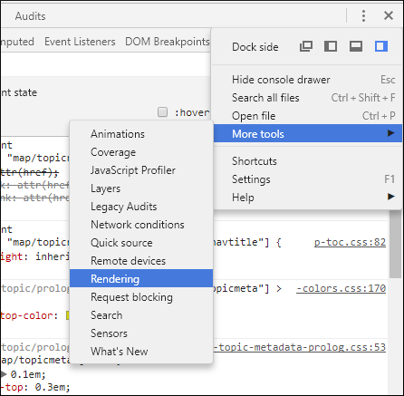

Debugging the CSS
If you notice that some of the CSS properties were not applied as expected, some of the tips offered in this topic might help you with the debugging process.
Merged Map File
- The first thing you should try is to check the file structure of the merged map file. This can be found in the out/pdf-css directory and it has the .merged.html file extension (you will also find a .merged.xml file that aggregates the entire ditamap structure). You can open the HTML files in Oxygen XML Editor/Author to examine the structure. Optionally, you can use the pretty print feature (Format and Indent) to make the structure easier to read.
- Check that the CSS selectors are written correctly against the document structure.
- If you still cannot identify the problem, then inspect how the styles are applied (you can try any of the methods listed below).
Inspecting the Applied Styles Using the Chrome Browser
- Open the file ending in .merged.html.
- Click on the element you want to inspect.
- Activate the Chrome Developer Tools by using , or press CTRL+SHIFT+I.
- Activate the Rendering pane by using :

- In the Rendering pane, select print from
the Emulate CSS media section. This will activate the CSS selectors
enclosed in
@media print {..}.
Inspecting the Applied Styles Using Oxygen XML Editor/Author
- In Oxygen XML Editor/Author, open the file ending in .merged.html.
- [Optional] From the Styles toolbar, choose the
+ Print Ready entry. This will activate certain CSS selectors
enclosed in
@media print {..}. - Click on the element you want to style. Use the Inspect Styles action from the Contextual Menu. A specialized CSS Inspector view will show the built-in CSS rules.
 Full Tags with
Attributes. You might be able to identify the selector you need to style
without using the CSS Inspector view.
Full Tags with
Attributes. You might be able to identify the selector you need to style
without using the CSS Inspector view.Other techniques
These are some other techniques you may find useful:
- Add background and borders properties to the specific CSS rule. If they do not appear in the output then there is a problem with the rule selector.
- Try to use the
!importantnotation to the property that is not applied, or make the selector more specific (you can add more parent selectors). - To figure out how the elements are mapped to PDF, you can use this fragment in the
customization
CSS:
* { border: 1pt solid blue !important; } *:before(1000) { content: oxy_name() !important; color: orange; } *:before(999) { content: "[ class= '" attr(class) "'] " !important; color: orange; }This will show the element name, its class attribute, and will paint a blue border around each of the elements in the output. It will not show the page margin boxes or some content elements that were hidden.
How to Speed up CSS Development and Debugging
You can speed up your CSS development considerably by not invoking the entire pipeline of transforming your DITA maps to PDF. Instead, you can use the merged map and transform it directly to PDF.
- Transform your DITA Map to PDF using the DITA Map PDF - based on HTML5 & CSS transformation scenario.
- Open the merged file (*.merged.html) that is located in the output directory in the editor.
- Configure an XML to PDF transformation with CSS scenario. Do not set CSS files here since the merged file already contains pointers to the stylesheets. This scenario uses the Chemistry CSS processor.
- Optional: Enable the output of the CSS processor using the following preferences page: .
How to Write XPath Expressions
This topic contains some guidelines for writing XPath expressions. They are used to extract the content from the merged DITA map document.
*[class~="front-page/front-page-title"]:before { text-align: left; content: oxy_xpath("(//*[contains(@class, 'topic/prodname')]/text())[1]"); display:block; }
- Do not use the DITA element names directly. You must use the DITA
@classattribute instead, as these attributes are propagated to the merged elements (including HTML<div>elements) while the element names can be lost. By using the class selectors, you also cover DITA specializations. - Use the "[1]" XPath predicate to select the first value from the document. For
example,
oxy_xpath("(//*[contains(@class, 'topic/prodname')]/text())[1]"). The meta-information might be copied multiple times in the output, inherited by the<topicref>elements, so you can get many more values than expected. - Do not use strings as values for the pseudo-elements content, as the string values are not supported for pseudo-elements. Instead, use the XPath directly.
- Use the Oxygen XPath Builder view to test the XPath expressions.
How to Debug XPath Expressions
You can use the content extracted from the document using the oxy_xpath
function in your pseudo-elements (:before, :after) or in
string-set variables.
For example, the following XPath finds the publication author, set in the DITA map:
<map>
<title>The Art of Bike Repair</title>
<topicmeta>
<author>John Doe</author>
</topicmeta>
...
:root {
string-set: author oxy_xpath('//*[contains(@class, "front-page/front-page")]/*[contains(@class, "map/topicmeta")]/*[contains(@class, "topic/author")]/text()');
}
To debug an XPath expression:
- Read the XPath Expressions Guidelines.
- Begin by transforming your document using your customization CSS.
- In the output folder, you will find a [MAP_NAME].merged.html file (or if you are using the DITA Map PDF - based on HTML5 & CSS transformation, a [MAP_NAME].merged.html file).
- Open the merged file in the Oxygen XML Editor/Author.
- Activate the XPath Builder view ().
- Paste your XPath expression and click the
 Execute XPath button. Check if it
returns the expected results.
Execute XPath button. Check if it
returns the expected results.
The XPath builder has a function that allows it to display the document path of the current
element from the editor ( Settings drop-down menu > Update on cursor move). Alternatively, you can right-click the element in the merged document and
select the Copy XPath action, then paste it in the XPath builder.
Settings drop-down menu > Update on cursor move). Alternatively, you can right-click the element in the merged document and
select the Copy XPath action, then paste it in the XPath builder.